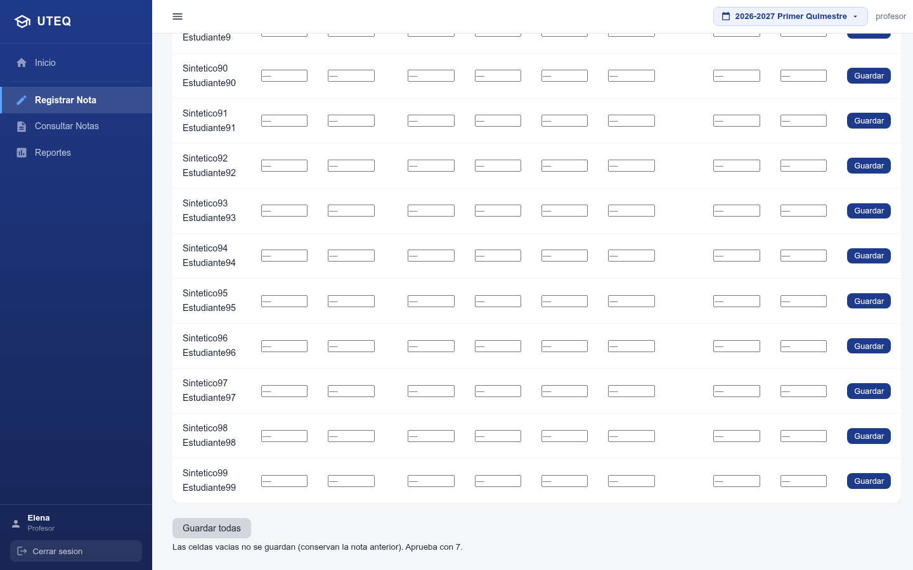
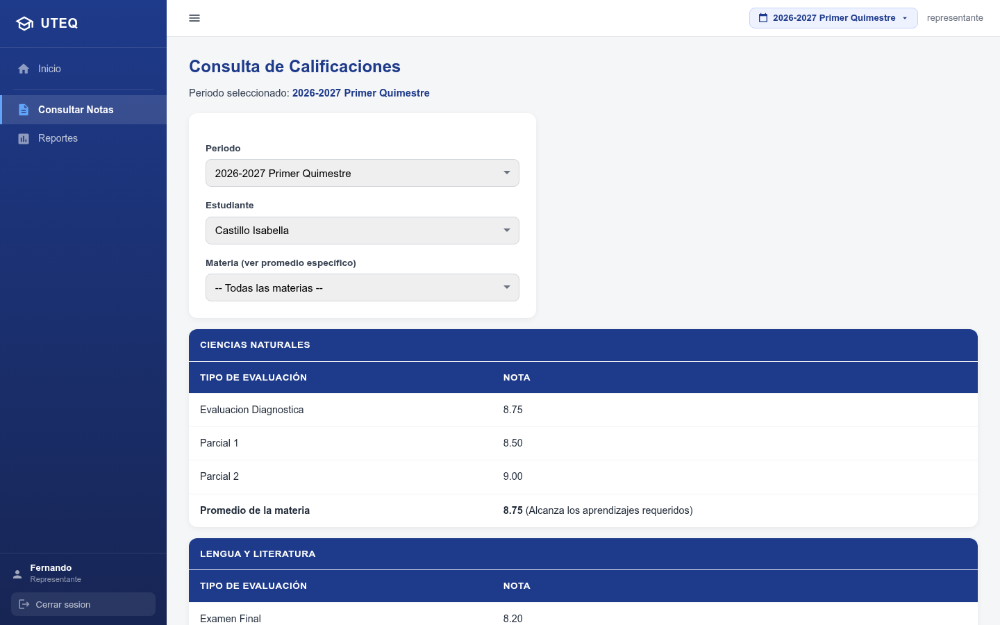
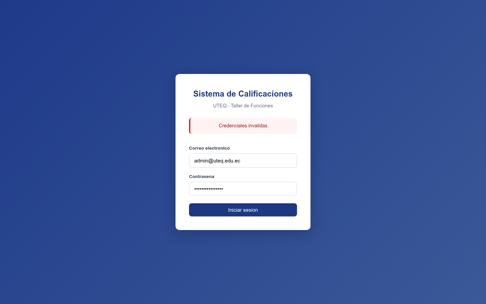
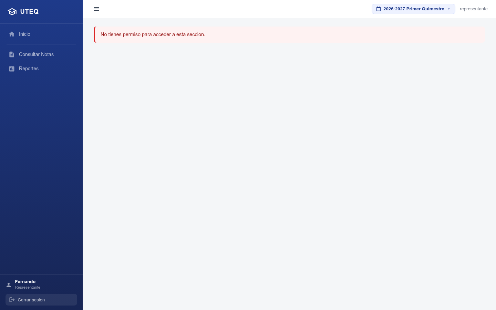

Universidad Técnica Estatal de Quevedo (UTEQ)
Materia: Verificación y Validación de Software
Septiembre 2026
Integrantes: Castro Espinoza Kevin Moisés · Vélez López Ricardo Elías
Docente: Ing. Cordero Bazurto José Steven
Notas en planillas físicas y Excel distribuidos sin trazabilidad, promedios a mano y padres sin acceso remoto.
Implementar un sistema web de calificaciones verificado y validado antes de producción.
Node.js + Express · PostgreSQL 18 (esquema colegio) · HTML/CSS/JS · Playwright.
administrador · profesor · representante · psicóloga
(control de acceso por rol).
Ver: 01_personas.md · 02_historias_usuario.md
Detalle completo: 01_personas.md
| HU | Usuario | Funcionalidad |
|---|---|---|
| HU-01 | admin | Iniciar sesión |
| HU-02 | admin | Gestión de estudiantes |
| HU-03 | profesor | Registro de calificaciones (0-10, masivo, auditado) |
| HU-04 | representante | Consulta de notas por estudiante |
| HU-05 | representante/admin | Reporte de promedios por periodo |
| HU-06 | admin | Auditoría de cambios |
| HU-07 | admin | Un único periodo activo |
| HU-08 | admin | Respaldo de la BD |
| HU-09 | psicóloga | Rendimiento académico |
Ejemplo HU-03: rango 0-10 · guardado masivo · upsert auditado · materia no asignada → 403
14 casos manuales cubriendo las 9 historias:
| Validación | Esperado | Obtenido | Resultado |
|---|---|---|---|
| Cédula duplicada | 409 | 409 + mensaje | PASS |
| Nota fuera de rango (11) | 400 | 400 "fuera de rango 0 a 10" | PASS |
| Materia no asignada al prof. | 403 | 403 + mensaje | PASS |
| Fechas de periodo inválidas | 400 | 400 + mensaje | PASS |
| Acceso no-admin a auditoría | Bloqueado | Error de permiso | PASS |
| Total | 14/14 PASS | ||


Evidencias: evidencias/pruebas_api_manuales.txt + capturas playwright-0X-*.png
35/35 PASS
66/66 PASS
Total automatizado: 101/101 PASS · Evidencias: e2e_test_repo_66.txt · playwright_repo_35.txt


| # | Historia | Resultado | Decisión |
|---|---|---|---|
| UAT-01 | HU-01 Login admin | PASS | ACEPTADO |
| UAT-02 | HU-02 Gestión de estudiantes | PASS | ACEPTADO |
| UAT-03 | HU-03 Registro de notas | PASS | ACEPTADO |
| UAT-04 | HU-04 Consulta representante | PASS | ACEPTADO |
| UAT-05 | HU-05 Reporte de promedios | PASS | ACEPTADO |
| UAT-06 | HU-06 Auditoría | PASS | ACEPTADO |
| UAT-07 | HU-09 Rendimiento psicóloga | PASS | ACEPTADO |
100% de criterios de aceptación cumplidos → aprobado para producción.
Datos de participantes simulados (confidencialidad) · 06_prueba_beta.md
0
2
Selector de estudiante poco visible · tablas estrechas en móvil.
6
Editar sin recarga (ya cubierto), exportar CSV/Excel, gráfico de tendencia, recordar estudiante, vista móvil, descargar respaldo.
Mejoras críticas ya cubiertas por el sistema; resto en backlog priorizado.
07_observaciones_beta.md
08_encuesta_satisfaccion.md
| Dimensión | Promedio |
|---|---|
| P1 Facilidad de uso | 4.7 |
| P2 Aprendizaje | 5.0 |
| P3 Apariencia | 4.2 |
| P4 Rendimiento | 4.7 |
| P5 Confiabilidad | 5.0 |
| P6 Precisión | 5.0 |
| P7 Claridad | 4.5 |
| Dimensión | Promedio |
|---|---|
| P8 Utilidad para el rol | 4.8 |
| P9 Seguridad | 5.0 |
| P10 Mensajes de error | 4.2 |
| P11 Consulta | 4.8 |
| P12 Auditoría/respaldos | 4.8 |
| P13 Autonomía | 4.5 |
| P14 Recomendación | 4.8 |
Satisfacción global (N=30): 4.7 / 5 (94%) · Sí/No: 112/120 favorables (93%) · 0 errores bloqueantes
Interpretación: confiabilidad, precisión y seguridad = puntos fuertes; apariencia, mensajes de error y móvil = oportunidad de mejora.
| # | Hallazgo | Severidad |
|---|---|---|
| H1/H2 | Migraciones: periodos 2 y 3 no creados · setup.ps1 omitía scripts | Alta/Media |
| H3/H4 | IDs hardcodeados en seeds (materia inexistente, rol psicólogo id=4) | Media |
| H5 | fn_auditoria_generica sin search_path → fallaba | Alta |
| H6 | sp_registrar_calificacion ambiguo (2 sobrecargas) | Alta |
| H7/H11 | Tests con IDs hardcodeados / ventana de auditoría frágil | Media |
| H8 | Playwright sin navegador instalado | Baja |
| H9/H10 | Credenciales doc-REAL · ruta llamaba SP inexistente | Baja/Alta |
| H12/H15 | Seeds sin search_path · pool.on('connect') mal aplicado → «no existe la relación» | Alta |
| H13/H14 | profesores.id_usuario desalineado · representante sin enlazar (dashboard vacío) | Alta |
Todos los hallazgos cerrados · suites en verde.
El sistema queda validado para producción.
Mejoras futuras: exportación CSV/Excel, gráfica de tendencia, recordar estudiante, vista móvil.
¡Gracias! ¿Preguntas?
Recorrido en vivo (~5 min):
| Paso | Acción | Rol |
|---|---|---|
| 1 | Login admin@uteq.edu.ec / UTEQ2026 | admin |
| 2 | Materias del periodo activo + planilla con ciclo/parcial | Elena (profesora) |
| 3 | Guardar notas → verificación en auditoría con usuario de la app | admin |
| 4 | Consulta de notas y promedios de sus hijos | Fernando (representante) |
| 5 | Panel de rendimiento (resumen + alertas, máx 10 filas) | María (psicóloga) |
| 6 | npm test (66 API) y npm run test:e2e --prefix backend (35 UI) | — |
Preparado: backend en :3000, BD con migraciones 01-20 y 110 estudiantes.
github.com/MoisesPanama/sistema-calificaciones-uteqcolegio, migraciones 01-20 · 110 estudiantesdocs/vyv/evidencias/ (resultados y capturas)docs/vyv/INFORME_TECNICO_VYV.md (PDF/DOCX)docs/vyv/presentacion/index.htmlbackend/e2e_test.js · backend/tests/Aplicación completa + base de datos + recursos listos para la defensa.